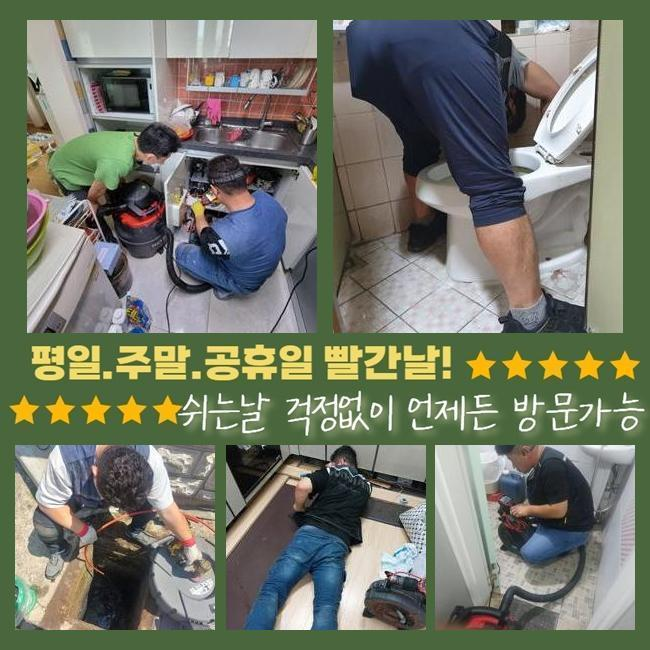
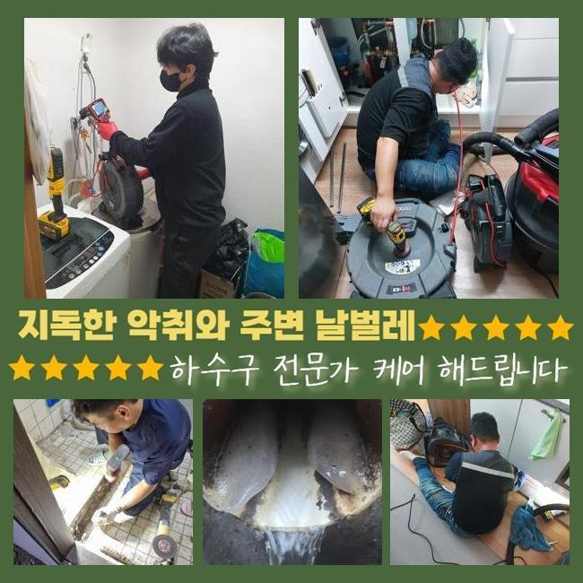
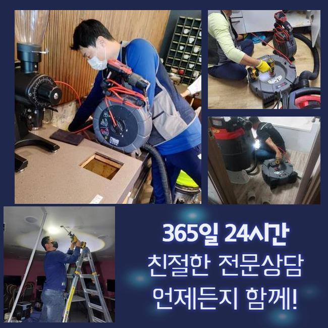
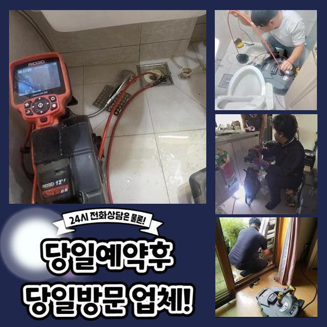
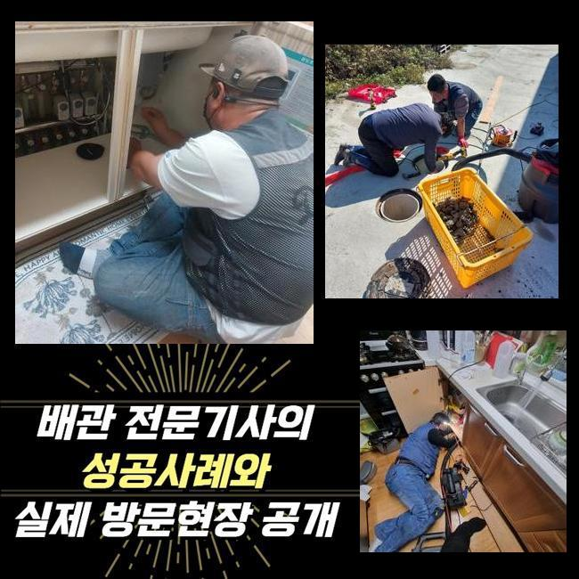
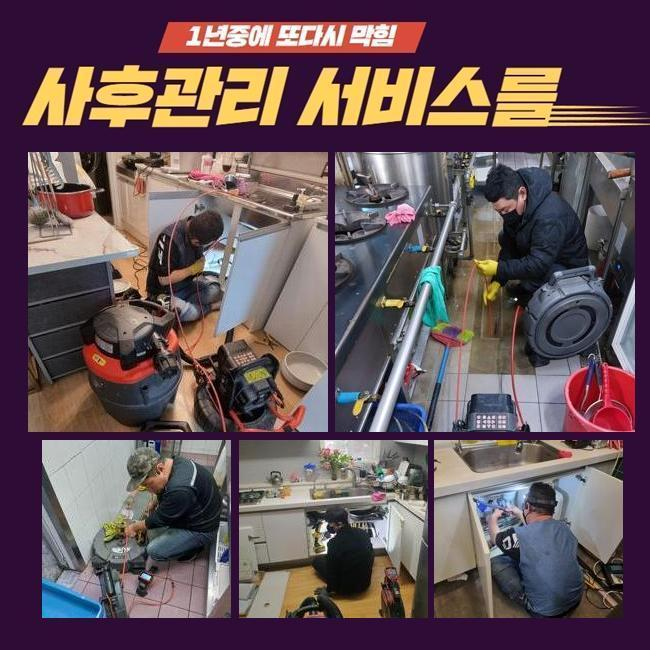
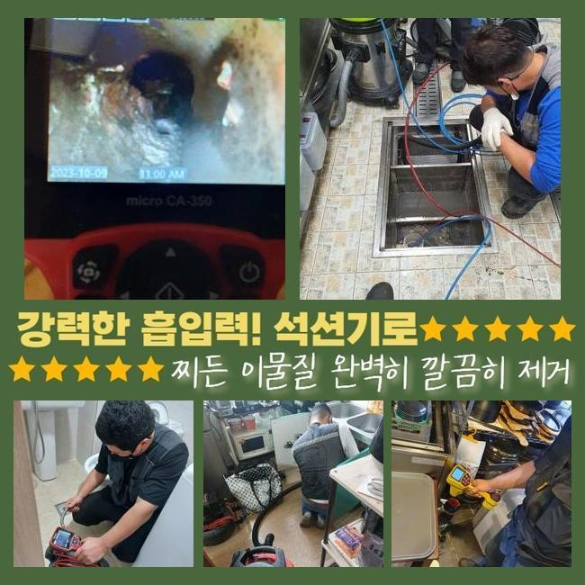

🏠 양주 산북동세탁기배수구막힘 남면 고압세척비용 배관막힘누수업체
용인시 처인구 배관막힘 전문 시공 후기

📋 작업 개요
- 위치: 용인시 처인구, 수원시 영통구, 화성시 동탄
- 서비스 유형: 배관막힘, 누수수리, 고압세척, 내시경점검
- 작업 일시:
- 업체명: 하수구수사대 (010-5615-2118)
🔍 문제 상황
양주 산북동세탁기배수구막힘 남면 고압세척비용 배관막힘누수업체
더러운 오물들이 끼어 만들어진 배수 막힘은 평온한 집에 심각한 어려움을 선사합니다
만약 오수까지 역류한다면 내부가 엉망진창인 수준으로 돼서 속상할지 모릅니다
이처럼 안타까운 경우를 보완해서 되돌려드리는 게 저희의 업무입니다
손대기 힘들도록 막막한 사태에 빠지셨다면 망설임 없이 연락해 주시길 바라요
오늘의 사례는 물의 막힘과 범람이 함께 발생해 큰일이다 싶어 전화주셨는데요
순식간에 일어난 일이라 생각하겠지만 배수구 문제는 장시간 머무르던 문제들이 참고 참다가 발현되고 마는 문제입니다
크고 작은 입자의 불순물이 배관 안에 쌓이다가 하수관의 지름을 꽉 메워버린다면 셧다운되는 것입니다
어떤 하수구라도 뚫어내는 장치를 두루 가지고 빠르게 고객님을 직접 찾아갔습니다
하수구 관련한 이상 현상들은 물을 쓰는 모든 활동들을 전적으로 멈추게 만듭니다
여러 장소 가운데 물을 많이 반드시 써야하는 장소가 탈이 난다면 빨리 고쳐달라는 강한 요청이 들어와요
물길이 차단되어버리기 때문에 일상을 이어가지 못하는 불편감이 일시에 일어나기 때문에 한시가 급한 사안이죠
거의 시간마다 한 번 꼴로 생활용수를 쓰기 때문에 편안한 생활을 이어가는데 방해가 된다고 봐야합니다
이를 보완하기 위해 적절한 검토와 명확한 솔루션이 재빠르게 이뤄져야 할 것입니다

🔎 원인 분석
💡 전문가 진단: 정밀 진단 장비를 사용하여 슬러지의 고착 여부를 판명하고 타격/세척 작업을 실시했습니다.
배관고장의 주요한 까닭을 알아봐야 하겠지만 이상 현상들만 종합해 보아도 충분히 예측이 가능합니다
많은 증거들을 모아보니 다수의 석회화된 물질이 있다는 게 강력한 원인으로 여겨졌습니다
내려간 다량의 하수와 오물들이 장기화된다면 딱딱한 석회가 내부로 말라붙는 게 수순인데요
배관 경로를 체크하고 작업의 노선을 체계적으로 설계해야 할 듯 싶었습니다
소소한 양의 석회가 붙어있는 상황이 관찰된다면 석션으로도 충분하게 제거 작업이 가능하다고 볼 수 있어요
끼인 석회가 상당량이거나 배관의 긴 부분에 틈도 없이 결합되어 있다면 부드럽게 해주는 액상 물질을 넣어서 묽은 제형으로 변화시켜야 합니다
얼마나 깊은 영역까지 남아있는지를 조사해봐야 약물 투입량도 결정이 되니 미리 탐방하는 절차가 필요했어요
작업 개시를 앞두고 배관용 카메라를 넣어서 내부를 체크하고 알맞은 양의 클리너를 내부로 흘려보냈어요
이물질의 잔여 현황을 관측을 이어가보니 진심으로 한숨이 나올 정도로 틈도 없이 막혀버렸더라고요
석회가 군데군데 붙은 상황을 초월해서 전면적으로 모든 파이프가 석회물질에 점령당한 수준이더라고요
여기서 바로 배관 스케일링 단계를 끊지않고 반복했다간 단단한 석회때문에 배관에 결함이 생길 수 있습니다
불상사를 방지하려면 액상을 사용해 이물질을 분해하고 시공을 재개해야 합니다
약물이 부족할 경우 효율적인 액화 작업이 지체되므로 사전에 대비해야하죠
해당 하수구에 대한 탐색을 꼼꼼하게 이어간다면 어려움이 하나 없이 제거를 해나갈 수 있습니다

🔧 작업 과정
그렇기에 모든 현장에는 내시경은 빠져서는 안되는 도구이며 누락되어서는 안되는 기계로 손꼽히죠
여유를 두고 석회가 충분히 분해될 때까지 얌전히 기다리며 살폈습니다
그 덕에 샤프트를 사용해도 배관을 안전하게 유지하며 문제 없이 해결할 수 있었습니다
약품의 작용으로 잘게 떼내기 수월하고 처리 과정 자체도 쉽기 때문입니다
손이 미치는 범위의 구간이라면 단시간에 해결할 수 있습니다
하지만 배관의 설계는 전체를 모두 보기 힘든 깊은 구조기때문에 다양한 접근으로 청결 작업을 해야합니다
배관 컨디션과 구조 자체를 명확히 인지하고 있어야 손상없는 제거 작업에 몰두하여 성공적으로 끝낼 수 있어요
딱딱한 강도는 벗어난 것 같다고 보였는데 혹시모를 역류가 형성되지 않게 조심해서 세척을 이어갔습니다
저희는 현장의 막힘을 완벽하게 보수하기 위하여 저희 장비인 플렉스 샤프트를 자주 운용하는 편입니다!
장치 끝부분에 달려있는 쇠가 빠르게 돌면서 이물질을 미세하게 파쇄하는 목적을 수행하게 되는 작업 완성도가 좋은 장비예요
과하다 싶은 수준으로 업무가 일어난다면 데미지를 입는 경우가 있기에 유연한 조절 기술과 노하우를 가지고 있어야만 해요
사전에 접착도를 풀어두지 않으면 속 시원히 없애는게 상당히 어려워질 수 있어요
맡겨주신 의뢰인분은 배관이 부러지지는 않으려나 많이 두려워 하는 모습을 보이셨습니다
본작업에 돌입하기 전에 납득 되도록 이야기 해드린 후에 질의응답도 해드리면서 도맡고 있으니 우려하지 않으셔도 돼요
걱정과 다르게 석회화가 약물 덕분에 충분히 연해져서 샤프트로 수월하게 처리할 수 있었어요
역류때문에 오염됐던 육가도 세부적인 부분까지 말끔히 닦아드렸습니다
마지막으로 물이 잘 흘러가는 상황임을 인식해도 다시 한 번 통수 검사 시행을 위해 물을 다량 흘려보내봅니다
상당한 양의 물들을 일시에 내려보냈는데 콸콸 소리를 내며 나아가는 것이 눈에 선하게 보이더라고요
차단되어 있는 측면을 없애줬기 때문에 이렇게 물이 정상적인 경로를 따라서 통쾌하게 폐기될 수 있습니다
앞선 작업을 매우 완벽하게 분명히 완수했으므로 근래에는 안전한 사용이 이어지겠지만 먼 미래에는 석회가 어쩔 수 없이 자리할 겁니다
하수시설은 제아무리 필터를 씌워 관리하더라도 물 속의 자잘한 입자들이 누적되는 시스템이므로 정화작업을 거쳐야 합니다
물을 자주 사용하는 곳일수록 하수구의 고장이 빈번하게 생성될 수 밖에는 없습니다
정기적으로 파이프가 전문 검진을 의뢰해야 하며 이상한 낌새가 없어도 세척을 맡기시는 것을 권장하고 싶습니다


✅ 작업 완료
하수시설은 실제 이용자의 사려 깊은 이용과 관심이 불가결한 시설입니다
막힘이 발생하기 시작하는 시점에 조치를 취한다면 간단히 해결할 수 있습니다
간단한 장비로만 힘겹게 임시방편으로 처리하면 언제든지 큰 사고가 발생할 수 있습니다
물빠짐이 저조해지는 증세가 나타나거나 또다른 사정이 있다면 반드시 저희를 찾아주세요
난처한 상태에 맞닥뜨렸다 해도 저희의 전문성으로 완벽히 돌파할 수 있다고 확신을 드리고 싶네요
새벽 시간대라 하여도 스케줄에 맞춰 내방드릴 수 있으니 아래 번호로 알려주시고 이어질 다른 포트폴리오 글도 주목해 주시면 좋겠습니다




⚠️ 하수구 배관 막힘 예방 및 관리 가이드
- ✅ 머리카락, 비닐, 물티슈 등 물에 분해되지 않는 이물질은 절대 흘려보내지 마세요.
- ✅ 기름기 많은 식기는 설거지 전 키친타올로 먼저 기름때를 닦아내세요.
- ✅ 주기적으로 배수구에 뜨거운 물을 가득 부어주어 유지방 고착을 방지하세요.
- ✅ 작업 후 1년 이내 재발 시 무상 A/S 보증 서비스를 제공합니다.
💡 핵심 정리
- 확실한 장비 작업(내시경 점검 및 샤프트 스케일링)으로 원인을 뿌리 뽑습니다.
- 작업 후 1년 이내에 동일한 부위 재발 시 100% 무상 A/S 서비스를 보장합니다.
- 서울 · 경기 · 인천 전 지역에 24시간 언제든 긴급 출동할 수 있도록 항시 대기 중입니다.
❓ 자주 묻는 질문 (FAQ)
🚨 용인시 처인구 배관막힘 문제로 고민이신가요?
정확한 원인 진단과 확실한 시공으로 재발 없는 해결을 약속드립니다.
24시간 긴급 출동 | 서울 · 경기 · 인천 전지역 | 1년 내 재발 시 무상 A/S